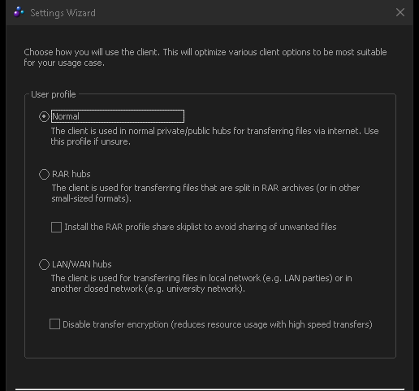
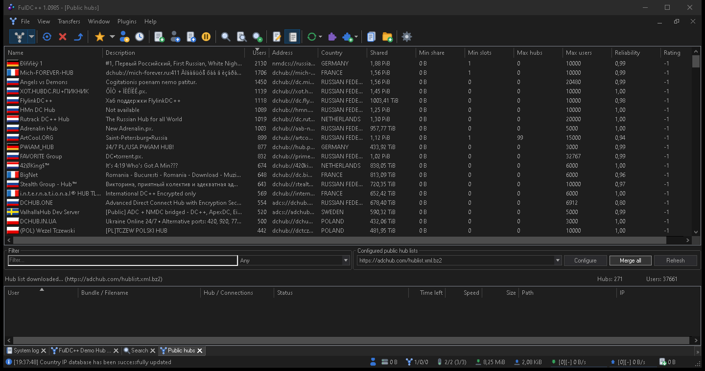

Getting started
From a fresh download to your first connected hub.
Installing
FulDC++ ships as a portable ZIP for 64-bit Windows 10 and 11. There is no installer to run:
- Download the ZIP from the download page.
- Unpack it wherever you want to keep it — your user folder, a second drive, a USB stick.
Avoid
C:\Program Files: Windows makes that folder read-only for normal accounts. - Run
FulDC.exe.
Your settings, favourites and logs are not kept next to the program. They live in
Documents\FulDC++ and %LocalAppData%\FulDC++, so upgrading is just a
matter of unpacking a newer ZIP over the old one.
Keeping it up to date
FulDC++ checks fuldcpp.net for new versions and offers to update itself. Updates are
signed and the signature is verified before anything is replaced, so a tampered or corrupted
download is refused rather than installed. You can check on demand from
File → Check for updates.
The setup wizard
The first time FulDC++ starts it runs an eight-page setup wizard. You can re-run it at any time from File → Setup wizard, and every answer it collects can also be changed later in File → Settings — nothing here is permanent.

1 · Language
Pick the interface language. FulDC++ bundles 18 translations; the default follows Windows.
2 · Personal information
Your nick, and optionally an e-mail address and description. The nick is what everyone on a hub sees, and it must be unique on each hub — if it is taken you will be asked to pick another when you connect. Some hubs also read the description field, so keep it short and clean.
3 · User profile
Choose Normal unless you know otherwise. RAR hubs tunes the
client for release-distribution hubs and offers to install a matching skiplist, so that loose
.nfo, .sfv and similar files are kept out of your share.
LAN is for a local network and may turn transfer encryption off, which is
exactly what you do not want on the public internet.
4 · Connection speed
Your download and upload speeds. These are not throttles — they tell hubs and other users what to expect, and they seed sensible slot and segment defaults. Give an honest figure; many hubs have minimum-share or minimum-speed rules and check this value.
5 · Automatic connectivity detection
Let FulDC++ work out its own ports. It tries UPnP on your router, falls back to detecting your external address, and configures active mode if it can. Say yes here unless you already know your network setup.
6 · Manual connectivity
Only shown if you decline the automatic step. Set the TCP and UDP ports, choose active or passive mode, and pick a transfer-encryption level. See Troubleshooting for what active and passive actually mean.
7 · Shared directories
The folders you want to make available to other users. You can leave this empty for now and add folders later, but be aware that many hubs enforce a minimum share before they let you in. Everything you add here goes into your default share profile; see Sharing for profiles and for what happens next (hashing).
8 · Finished
A summary and a pointer at the three ways to connect to a hub, which is exactly what the next section covers.
Your first hub
Nothing happens in a direct connect client until you join a hub. There are three routes in:
Public hubs
View → Public hubs downloads one or more public hub lists and shows every hub on them — name, description, user count, minimum share. Type in the filter box to narrow the list, then double-click a hub to connect. Right-click a promising one and add it to your favourites so you can find it again.

Favorite hubs
View → Favorite hubs is your own list. Hubs you add here can connect automatically at startup, and each one can carry its own nick, password, share profile and description — useful when different communities know you under different names.
Quick connect
File → Quick connect (Ctrl+Q) takes an
address directly, for when somebody hands you one. Addresses look like
adcs://hub.example.net:2780 (ADC, encrypted — preferred),
adc://… or dchub://… (the older NMDC protocol).
What now?
Once you are in a hub you will see the chat on the left and the user list on the right. From there:
- Press Ctrl+S to open a search window and look for something.
- Double-click a user in the list to browse their file list.
- Watch progress in the transfer pane at the bottom of the window, covered in The main window.